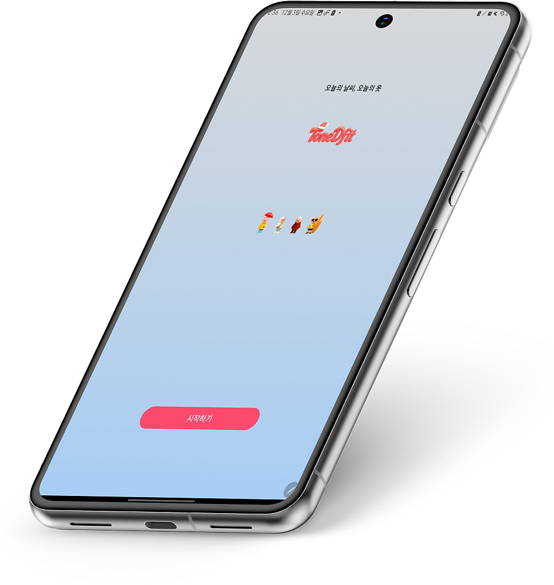
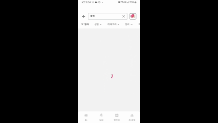
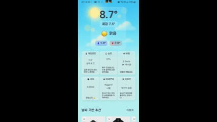
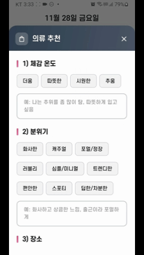
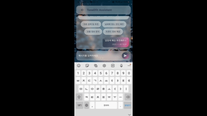
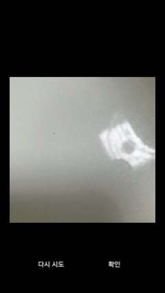

프로젝트 개요
사용자의 현재 위치 날씨와 일정에 맞춰 의류를 추천하고,
텍스트·카테고리·이미지 기반으로 상품을 검색할 수 있는 Flutter 모바일 앱입니다.
- 기간: 2025.10.20 ~ 2025.11.25
- 팀 구성: 6명 (FE 1 / BE 2 / DE 2 / INFRA 1)
- 역할: 프론트엔드 개발 (Flutter)
기술 스택
- Flutter 3.35, Dart 3.9
- Riverpod, Dio, Geolocator, Firebase Analytics
Flutter 3.35
Dart 3.9
Riverpod
Dio
Geolocator
Firebase Analytics
서비스 주요 화면






주요 기능
실시간 날씨·일기예보 기반 의류 추천
- 실시간 날씨 / 대기질 / 시간별 / 7일 예보 조회
- 체감온도·강수량·풍속·습도 기반 추천
- 캘린더 선택 날짜의 일기예보 기반 추천
- 시간별 그래프, 날씨 상세 모달 제공
4축 기반 의류 추천
- 체감온도·분위기·장소·일정 정보 조합 추천
- 캘린더 연동 또는 직접 입력 기반 일정 추천
- 추천 결과 날짜별 저장 및 즉시 복원
다채널 의류 검색
- 텍스트 검색, 인기·최근 검색어
- 대·중·소분류 3단계 카테고리 검색
- 카메라·갤러리 기반 이미지 검색
- 가격·색상·소재·사이즈 필터 제공
일정 기반 코디 캘린더·북마크
- 캘린더 기반 일정 등록 및 편집
- 날짜별 착장 기록 및 의류 평가
- 상품 북마크 토글 및 카드 상태 동기화
AI 캐릭터·챗봇
- 메인 캐릭터 및 날씨 모달 캐릭터 렌더링
- AI 기반 캐릭터 의류 합성 기능
- AI 의류 상담 챗봇 인터페이스 제공
담당 역할
-
Flutter 프로젝트 초기 아키텍처 및 공통 인프라:
features / core / shared 계층 구조, 화면 전환 표준화, 공통 헤더·하단 네비·스플래시 컴포넌트화,
Firebase Analytics 기반 화면 추적
-
Riverpod 기반 다층 캐시 상태 관리:
날씨·의류·검색·인증 도메인 구조, 성별·대분류·소분류 3단계 캐시 키로 중복 API 호출 최소화,
병렬 로드 및 자동 페이지네이션
-
Provider 기반 다축 추천:
추천 Provider가 날씨 Provider를 참조, 체감온도·강수량·풍속·습도를 추천 API 파라미터로 통합,
현재 날씨·미래 일기예보·일정 기반 추천을 동일 흐름으로 관리
-
4축 추천 모달:
체감온도·분위기·장소·일정 조합 API 호출, 캘린더 날짜 선택·일정 연동,
추천 결과 날짜별 로컬 저장 및 재진입 시 복원
-
이미지 검색 파이프라인:
카메라·갤러리 → 영역 크롭 → 업로드 직전 재압축 → 멀티파트 업로드,
검색·홈 화면에서 동일 흐름 재사용 가능하도록 모듈화
-
북마크 및 상태 동기화:
북마크 토글 API·상태 관리, 카드별 개별 API 호출을 ID 집합 기반 Provider로 리팩토링,
카드 간 북마크 상태 동기화
핵심 성과
- 다층 캐시 기반 API 호출 최소화: 성별·대분류·소분류 3단계 캐시로 동일 조건 재호출 차단, 병렬 로드·자동 페이지네이션으로 상품 로딩 최적화
- 다축 추천 흐름 단일화: 체감온도·분위기·장소·일정을 단일 추천 흐름으로 통합, 날짜별 저장으로 재진입 시 즉시 복원
- 이미지 검색 업로드 최적화: 다운스케일 → 크롭 → 재압축 → 멀티파트로 페이로드·전송 부담 감소
- 북마크 N+1 제거: ID 집합 기반 Provider로 카드별 API 호출 제거, 단일 상태 변경으로 전체 카드 동기화
기술적 도전과 해결
1. 화면 간 카테고리·추천 API 중복 호출
- 문제: 메인·검색·카테고리·상품 목록에서 동일 조건 데이터 반복 호출, 대용량(100건 이상) 시 페이지네이션 누락으로 일부 상품 미표시 가능
- 해결: 성별·대분류·소분류 3단계 캐시 Provider, hit 시 호출 생략, miss 시 첫 페이지 후 전체 페이지 자동 수집, 병렬 로드·강제 갱신 옵션
- 결과: 동일 조건 재호출 제거, 페이지네이션 누락 해소, 화면 간 데이터 일관성 확보
2. 모바일 이미지 검색 업로드 지연
- 문제: 원본 그대로 업로드 시 전송 지연·실패 증가, 배경 포함으로 검색 품질 저하 가능
- 해결: 1차 다운스케일 → 검색 영역 크롭 → 업로드 직전 재압축 → 멀티파트, 위젯·서비스 단위 모듈화
- 결과: 페이로드 단계적 감소, 전송 안정성 개선, 검색·홈에서 일관된 이미지 검색 흐름
3. 북마크 카드별 N+1 API 호출
- 문제: 카드 마운트마다 북마크 목록 API 개별 호출, 화면 전환·재렌더 시 반복
- 해결: 북마크 productId 집합 전용 Provider, 목록 로드 시 한 번만 ID 집합 구성, 카드는 집합 구독, 토글 시 Provider에 add/remove, dispose 시 구독 해제
- 결과: 카드별 추가 호출 제거, 전체 카드 동기화, 메모리 누수 방지